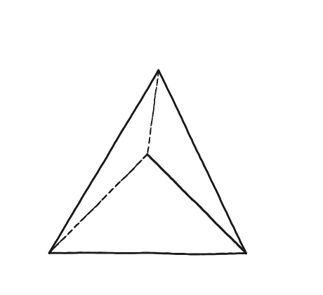
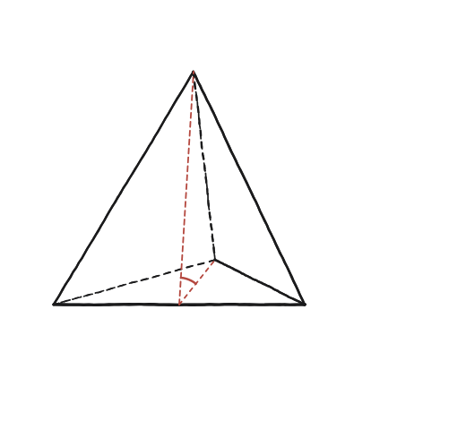

Quin és l'angle entre les cares d'un tetraedre regular? I per als altres poliedres regulars?

Què hem de produir
Un angle "diedre" —entre dues cares que comparteixen una aresta—, no l'angle pla d'una cara, que ja es coneix. N'hi ha prou de treballar-ne un o dos sòlids amb detall; el mateix mètode val per als altres tres.
Troba dos segments, un a cada cara, perpendiculars a l'aresta compartida
A cada una de les dues cares que es toquen en una aresta, es traça —dins d'aquella cara— el segment des del punt mitjà de l'aresta fins al vèrtex oposat d'aquella cara (l'alçada del triangle equilàter de la cara). Aquests dos segments, un a cada banda, formen l'angle diedre que es busca.
La construcció
L'angle marcat entre els dos segments, en sanguina: és aquest, i no cap altre, l'angle diedre que es busca.

Tancar-ho
El triangle amb què es treballa té per vèrtexs el punt mitjà de l'aresta compartida i els dos vèrtexs oposats, un de cada cara —no «els dos peus i el centre»: el peu és un de sol, i és el punt mitjà. Els dos costats que en surten són les dues alçades de cara (√3/2 per a aresta 1) i el tercer és el segment que uneix els dos vèrtexs oposats. Amb el teorema del cosinus (Qüestió 79) s'aïlla l'angle del punt mitjà, que és el diedre.
El tercer costat no és el mateix als dos sòlids, i d'aquí surt tota la diferència: al tetràedre els dos vèrtexs oposats són veïns i el segment val 1 (una aresta), de manera que 1 = 3/4+3/4−2(3/4)cosθ dona cos θ = 1/3; a l'octàedre són diametralment oposats i val √2, de manera que 2 = 3/4+3/4−2(3/4)cosθ dona cos θ = −1/3.
I aquí cal una advertència sobre la segona meitat de la pregunta, la dels altres tres poliedres. La recepta concreta —anar del punt mitjà de l'aresta al vèrtex oposat de la cara— només dona una perpendicular a l'aresta quan la cara és un triangle equilàter. En una cara quadrada, el segment del punt mitjà d'un costat al vèrtex oposat va de biaix i no serveix: el que hi val és anar al punt mitjà del costat oposat. La idea de fons —dos segments, un a cada cara, tots dos perpendiculars a l'aresta compartida— sí que és general; la recepta, no.
L'angle diedre del tetràedre regular és arccos(1/3) ≈ 70,53°; el de l'octàedre regular és arccos(−1/3) ≈ 109,47°. Aquests dos angles sumen exactament 180°. Els cinc, per completar la pregunta: tetràedre 70,53°, cub 90° (immediat: dues cares que comparteixen una aresta hi són perpendiculars), octàedre 109,47°, dodecàedre arccos(−1/√5) ≈ 116,57° i icosàedre arccos(−√5/3) ≈ 138,19°.
Comprovació
arccos(1/3) ≈ 70,53° i arccos(−1/3) ≈ 109,47°: 70,53° + 109,47° = 180,00° exactament (perquè arccos(−x) = 180° − arccos(x) per a qualsevol x).
Aquesta suma de 180° no és casualitat —és exactament el que fa possible omplir l'espai alternant tetràedres i octàedres regulars sense deixar cap buit, encaixant sempre perfectament al voltant de cada aresta compartida.